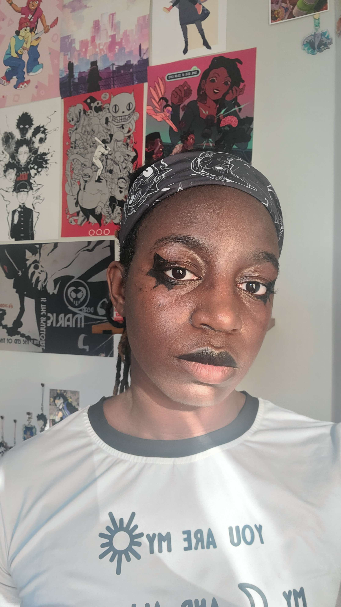
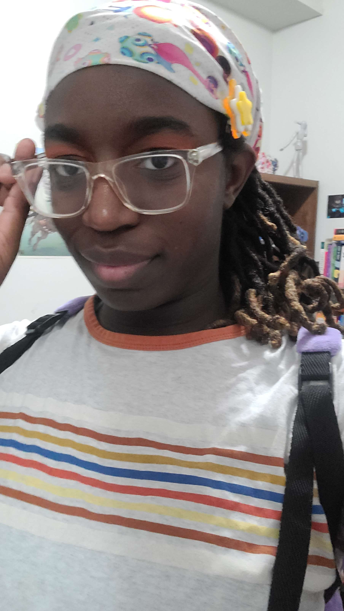
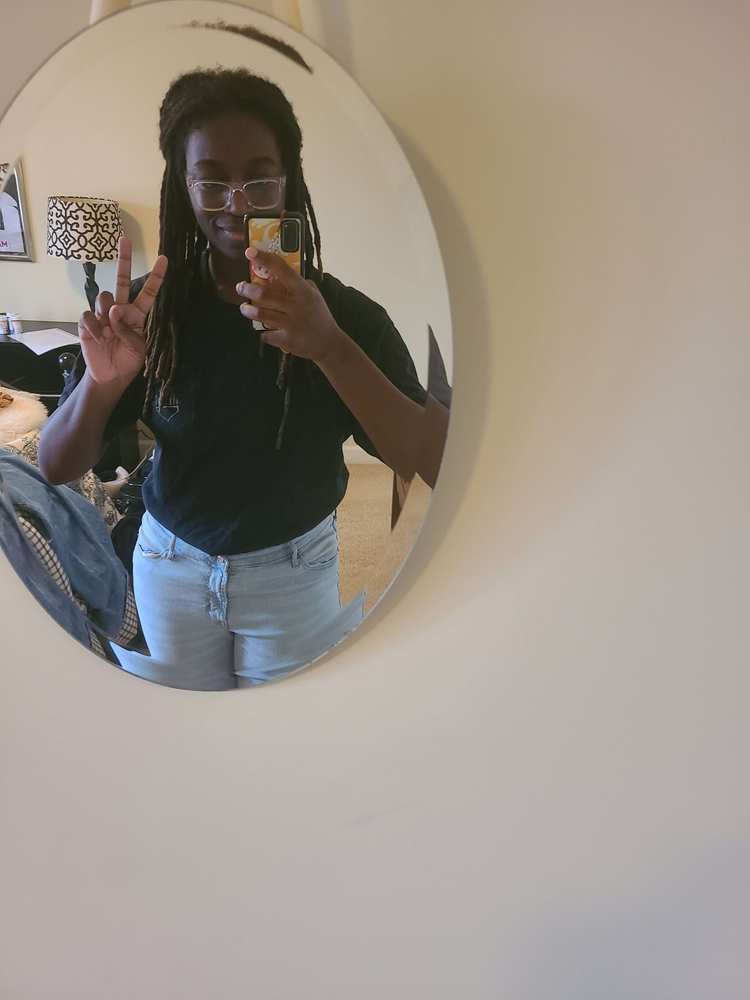

Year In Review
12/31/23
Hello dear reader,
This year. Fucking. SUCKED.
Like big time sucked.
Sucked all my joy and optimism and hope and dreams and everything. Everything.
You know. I got laid off on the first day of Black history month (which is also two days away from my birthday) and I would just keep laughing and joking about it and crying in hysterics.
You know, I was told I should be applying to Mid level programming jobs while being told the other person had more experience than me. People always have more experience than me.
I wanted to give up time and time and time again. But I didn't.
Despite losing jobs, not being paid, not being chosen for jobs, and not being able to pay my bills on time like I'd like to-
I'm still here. And I think the biggest take away for this year is that people have stayed with me. People have supported me and continued to lift me up, guide me, and keep hope in my heart.
I'm just so greatful for the people in my life right now, especially the queer and trans people in my life. There's just so many wonderful trans women in the games industry who I've known for a while or who I met at GDC who have been looking out for me and the joy I get from people reminging me that yes! You can sit with us you can keep going!! Makes me feel so warm inside.
I may be unhappy with the rate of change I'm going at. I want to feel more confident, I want to be more productive, I want more more more... But my therapist has been getting me to let go of words that have a grip on me like "more" and "productive". Before the holidays, I had asked if we could focus on the idea of New years resolutions because that too chokes me every year.
Every year on the final day I look at what I haven't accomplished, what I should be doing with the next year, and what the past new years have been like. Most new years have bad memories attached to them, but finally. The past three years, the years I've been with my current my girlfriend, it's been different. I've been getting better at seeing life as something to enjoy instead of rushing to complete every idea, game, and anime I haven't finished. Dear reader, I want to take life slower! I want to grow old! I want to be old and gay and happy! And I don't want to have to be accomplished when I'm old! I just want to be happy.
Last night, I beat Thirsty Suitors with my girlfirend. The end of it is definitely sticking with me because of intergenerational trauma and just the way older folks talk to their children+grankids. It's sticking with me because my grandmother is always like "look at this kid who has a business before graduating high school. You have to put you politics aside so you can get better pay." And yadda yadda yadda. I love my grandma! She's not evil and doesn't scream at me and stuff, but things like that still stick in my head. Shouldn't I have a job by now? Shouldn't I have released my game and be financially stable? Shouldn't I be buying my parents a house with some big studio?
This is what plagues my mind along with others around this time of the year. What's breaking through all that noise is the fact I got to do so many things I liked this year!
I've read so much, played so much, streamed, made music!!!, made playlists, skateboarded, etc!!
I'm teaching again and I forgot how happy it makes me! I'm going to the library again and reading like I'm a kid. This whole blog post was originally just gonna be about media I've consumed this year, but it's so much it's bananas! Watching anime and movies used to be so hard because of my number of mental illnesses and I'm not gonna lie... Sometimes love can really help you fall back in love with things you haven't done in years. My girlfriend has convinced me to get back into so many things I haven't done in years.
I'm not good at reviewing stuff / writing about stuff yet because I'm in a mix between writing I'm in school and having a run on monologue (like how all my blog posts have been so far), but I think with this blog I'll get closer to writing how I actually want to write. However! I won't rush myself with this. I think I'll eventually do a top ten games for 2023 on Backloggd instead of here, but yeah. I don't have to rush to do the things I want. I want to take my time and have fun without putting a time limit on when I should finish it. Every year I say i'm gonna beat Persona 3 and I still haven't! And that's ok. I can go at my own pace and I don't have to catch up for people unless I want to!
This year I will live for myself! I'm in love! I have the best friends ever! And whatever terrors lie in wait for me in 2024 I will get through even if it ends up being worse than this year! I love myself and I look cute and I'll keeping shouting it from the rooftops!!!
Until next year dear reader...
